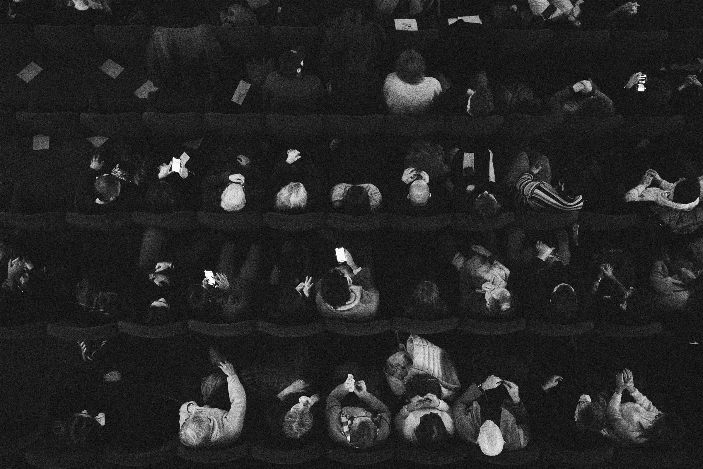

CDL APS • Rimini
Cinema giovane
e indipendente
CDL è un'associazione di promozione sociale che si occupa di sostenere, diffondere ed esplorare il cinema giovane e indipendente, attraverso la realizzazione di progetti cinematografici e l'organizzazione di eventi.
Attività recenti
Dalle sale e dai set


Tesseramento 2026 aperto
Sostieni


Associarti a CDL significa contribuire attivamente al nostro progetto di diffusione della cultura cinematografica indipendente.
Tutti i vantaggi per i soci